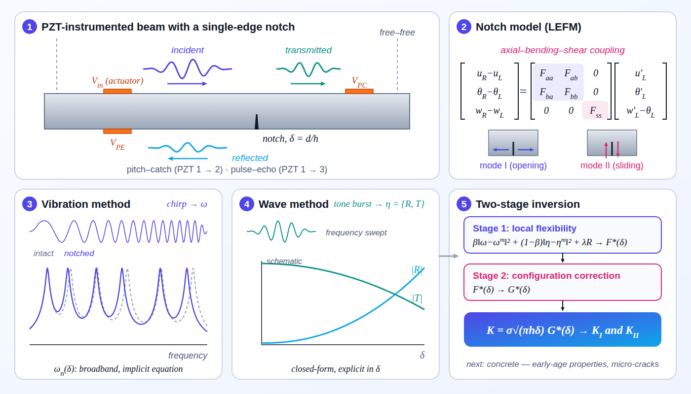
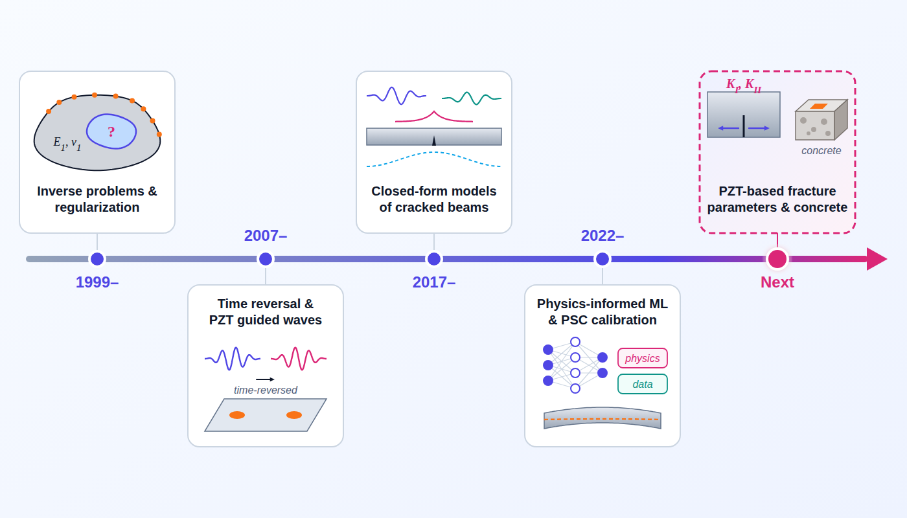
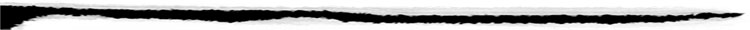

Welcome to Prof. Hyun Woo Park's Structural Analysis Laboratory~!
Current research
Research timeline


Click the image to enlarge.

Copyright(c) 'Structural Analysis Lab., Department of Civil Engineering, Dong-A University' All rights reserved.
If you have any question, send
e-mail
( hwpark@donga.ac.kr )